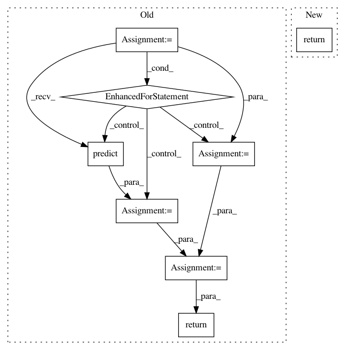

344a3d49e7c78300258fb4745c92b98ac57f38b1,skopt/learning/forest.py,ExtraTreesRegressor,predict,#ExtraTreesRegressor#,62
Before Change
// This derives std(y | x) as described in 4.3.2 of arXiv:1211.0906
std = np.zeros(len(X))
for tree in self.estimators_:
var_tree = tree.tree_.impurity[tree.apply(X)]
mean_tree = tree.predict(X)
std += var_tree + mean_tree ** 2
std /= len(self.estimators_)
std -= mean ** 2.0
std[std < 0.0] = 0.0
std = std ** 0.5
return mean, std
return mean
After Change
raise ValueError(
"Expected impurity to be "mse", got %s instead"
% self.criterion)
return mean, _return_std(X, self.estimators_, mean)
return mean
In pattern: SUPERPATTERN
Frequency: 3
Non-data size: 8
Instances
Project Name: scikit-optimize/scikit-optimize
Commit Name: 344a3d49e7c78300258fb4745c92b98ac57f38b1
Time: 2016-07-12
Author: manojkumarsivaraj334@gmail.com
File Name: skopt/learning/forest.py
Class Name: ExtraTreesRegressor
Method Name: predict
Project Name: donlnz/nonconformist
Commit Name: aab2ef03ff533c1160742fafd2bf12133e227ddb
Time: 2015-03-19
Author: henrik.linusson@gmail.com
File Name: nonconformist/ensemble.py
Class Name: AggregatedCp
Method Name: predict
Project Name: scikit-optimize/scikit-optimize
Commit Name: 344a3d49e7c78300258fb4745c92b98ac57f38b1
Time: 2016-07-12
Author: manojkumarsivaraj334@gmail.com
File Name: skopt/learning/forest.py
Class Name: RandomForestRegressor
Method Name: predict